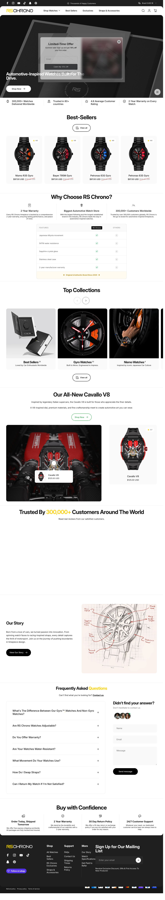
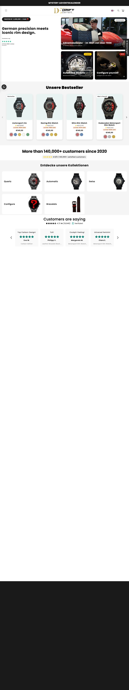
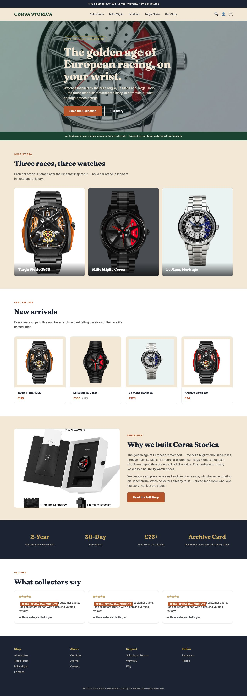
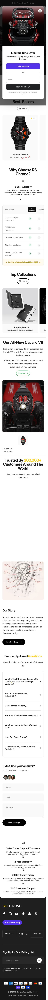
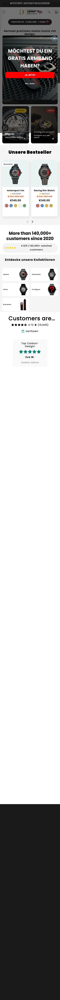
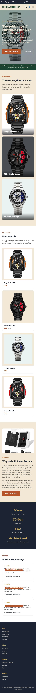
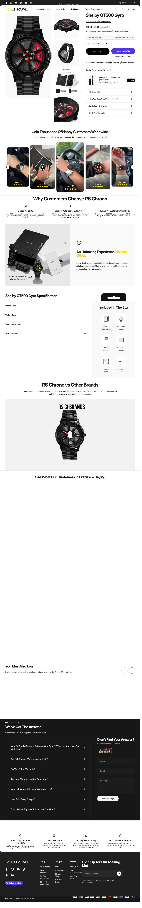
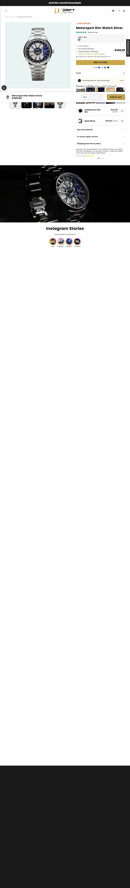
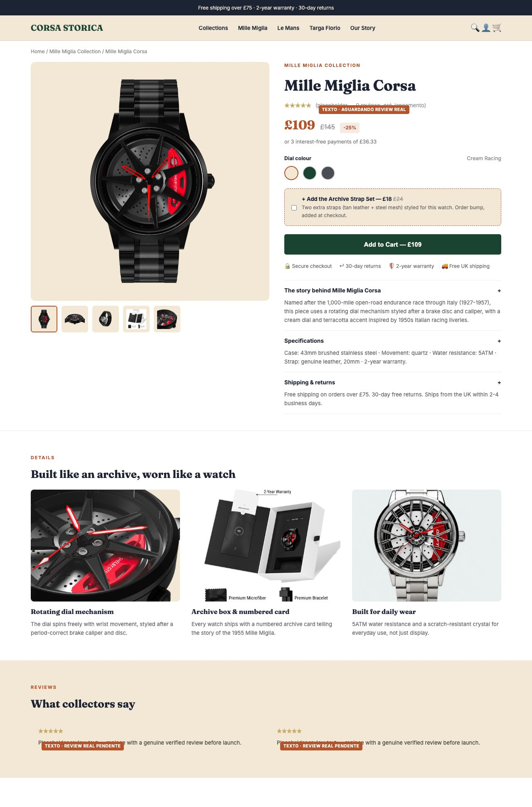
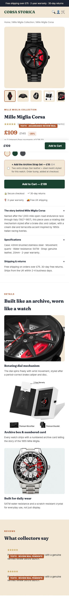

01Home · desktop (1280×900)
RS Chrono

HMN Watch

DriftElement

Carrora

Corsa Storica (proposta)

Os 4 concorrentes com escala confirmada em Ad Library (RS Chrono, HMN Watch, DriftElement, Carrora) capturados em Chromium headless, mesma classe de viewport que o blueprint da marca nova. Aprovação condicionada: só fica marcado como aprovado o que realmente ficou melhor nos 4 critérios.
















| Critério | Quem venceu entre os 4 | O que o blueprint puxou | Veredito |
|---|---|---|---|
| Prova social visível | HMN Watch (\"500.000+ customers\", 4.8-4.9★ na home) e RS Chrono (\"300.000+ drivers\" no criativo) | Blocos de review e claim de confiança na home e na PDP — mas com texto placeholder explícito, porque não existem reviews reais ainda | PENDENTE — não é falha de design, é a loja não ter nascido ainda |
| Diferenciação visual | Nenhum dos 4 — todos usam preto/cinza + acento neon/vermelho/laranja, quase indistinguíveis entre si numa rolagem rápida | Paleta verde racing/creme/terracota/dourado, tipografia serifada de época (Fraunces) — nenhum dos 4 concorrentes usa esse registro visual | GANHOU |
| Clareza da escada de oferta na PDP | Nenhum dos 4 mostra order bump de forma clara na dobra inicial da PDP (RS Chrono e HMN escondem em accordion/seção separada) | Order bump ("Archive Strap Set") visível acima da dobra, ao lado do preço, com caixa de seleção explícita | GANHOU |
| Responsividade mobile | Todos os 4 são lojas Shopify maduras, responsivas, sem quebra visível nas capturas | Testado nas mesmas capturas (390×844): sem overflow horizontal, sem elemento fixo cobrindo conteúdo, badges de placeholder ajustados pra não vazar do card (corrigido nesta rodada) | EMPATE — nenhuma quebra em nenhum dos 5 |
| Velocidade de carregamento | Não medido em nenhum dos 5 nesta rodada (ver lacuna) | Mockup carrega 2 fontes do Google Fonts (Fraunces + Inter) via CDN — mesma prática de fonte externa que a maioria das lojas Shopify usa | NÃO OBTIDO nos 5 — nenhum teste de performance de campo foi rodado nesta pesquisa |